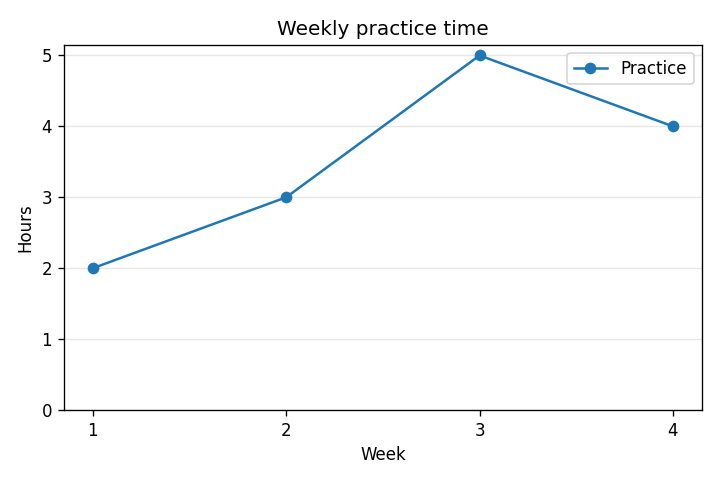
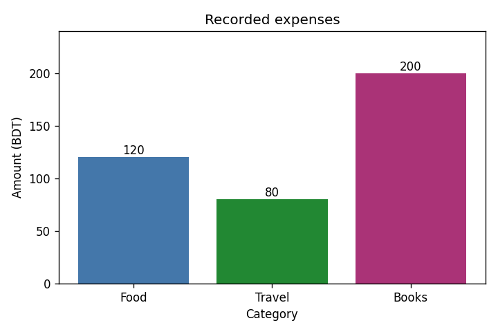

সংখ্যার column pattern লুকায়। Plot visual scale-এ মান বসিয়ে তুলনা দেয়। Matplotlib আঁকতে, মাপ বোঝাতে, report save-এ সাহায্য করে। আগে reader কোন সম্পর্ক দেখবে ঠিক করো।
Ordered week-এর পরিবর্তনে line, আলাদা food-travel category-তে bar, paired practice-hour/mark-এ scatter। অর্থ আছে: unrelated student line-এ জুড়লে নেই এমন sequence বোঝায়।
নিজের environment-এ python -m pip install matplotlib। Script window না খুলে PNG save, তাই laptop-server দুটোতেই interactive display ছাড়া চলে।
matplotlib.pyplot as plt। plt.subplots() Figure পুরো canvas আর Axes এক plotting region দেয়। Axes-এর নিজস্ব data-label; নাম plural লাগলেও এক region।
fig, ax = plt.subplots(figsize=(6, 4))
ax.plot(weeks, hours, marker="o")
ax.set(xlabel="Week", ylabel="Hours", title="Weekly practice time")
fig.tight_layout()
plt.savefig("plot.png", dpi=120)
plt.close(fig)ax রেখে method-এ destination স্পষ্ট। plot line, bar bar, scatter আলাদা point। x-y observation count মেলাবে। Sort-filter-এ pair অক্ষত।
figsize inch-এ width-height, dpi raster pixel per inch। ছয়-বাই-চার 120 dpi-তে 720x480। বেশি pixel বড় display-তে ভালো, confusing scale সারায় না।
Plot Axes-এ data বসায়। Week one-four x, hours two-three-five-four height। দেওয়া ক্রমে line জোড়ে, তাই time sort করো।
Horizontal-vertical দিক axis, scale-tick আছে। Tick label coordinate, axis label কী মাপে, title বিষয়। Unit ছাড়া 120 minute, mark নাকি taka বোঝা যায় না।
Legend series চেনায়। Series-এ label, তারপর ax.legend()। এক পরিষ্কার bar-এ নাও লাগে। Reader ভুল বুঝতে পারে এমন কিছু বোঝালেই extra element জায়গা পাক।
হালকা grid tick-এ height মেলায়, observation-এর চেয়ে শান্ত রাখো। অল্প বা এক point-এ marker ভালো; এক observation-এ marker ছাড়া line segment নাও দেখা যায়।
C জানা থাকলে
Figure plotting session-এর resource। Python memory সামলালেও pyplot open figure reference রাখে। Repeated process-এ close, unused canvas জমবে না।
Hours দুই থেকে পাঁচ উঠে শেষে চার। Numeric week x বাড়তে থাকে।

BDT total bar-এ। একই zero baseline-এ height amount-এর সমানুপাতে।

প্রতি point এক anonymous student। Association দেখা যায়, ছোট observational উদাহরণ causation প্রমাণ নয়।
Weekly line week three পর্যন্ত বাড়ে, four-এ কমে। Observation order বলে। Segment change ধরায়, unmeasured half-week-এর exact hour নয়। Interpolation-কে recorded fact বলো না।
Bar zero থেকে, length actual amount। কাল্পনিক record-এ books food-এর বেশি। Scale minimum-এর কাছে শুরু করলে bar difference বাড়িয়ে দেখায়। Line-এ কখনো narrower range চললেও label স্পষ্ট।
Scatter-এ two hours-এ দুই student, mark আলাদা। Equal x duplicate record নয়, দুটো রাখো। বড় data-তে overlap-এ transparency বা অন্য summary। Tidy করতে valid observation মুছো না।
Hour-mark pattern association, practice-ই cause প্রমাণ নয়। Prior knowledge, attendance বা অন্য factor লাগে। Point কী দেখায় বলো, শক্ত evidence লাগে এমন কারণ আলাদা।
চাওয়া format-এ savefig filename, যেমন plot.png। Relative path current folder। বড় app-এ explicit project path, report পাওয়া সহজ। Save ফেরার পরেই success বলো।
উদাহরণ pyplot-এর আগে Agg backend। Backend render বা window দেখায়। Agg graphical display ছাড়া image। Notebook নিজের backend নিতে পারে, সেই workflow মানো।
tight_layout common spacing ঠিক করে, সব long title/crowded label fit নিশ্চয়তা নয়। Reader-এর size-এ image খোলো। Label ছোট, canvas বড় বা tick rotate বুঝে।
Save-এর পরে close। Interactive show active figure close করলে পরে savefig empty canvas দিতে পারে। বড় প্রোগ্রামে reference রেখে fig.savefig ownership স্পষ্ট। এখানে একবারে এক Figure।
কোন hour-এর mark কোনটি হারায়। পুরো pair একসঙ্গে sort, একই order থেকে x-y।
Amount (BDT), Hours বা অর্থপূর্ণ unit। Program না দেখেও image বোঝা চাই।
পরের plot পুরোনো figure-এ যেতে পারে। Independent report-এ fresh, save-এর পরে close। Share-এর আগে file দেখো।
API tested Matplotlib 3.10-এ; bar_label-এ 3.4+। Python support release-নির্ভর। Font-rendering system-এ বদলায়, তাই confirmation text stable, image byte সর্বত্র এক নয়।
দরকারি chart-এ সঠিক geometry, honest scale, readable label আর দেখে নেওয়া saved image। পরের Python-এ problem solving-এ নানা কাজে representation আর result check চর্চা করো।